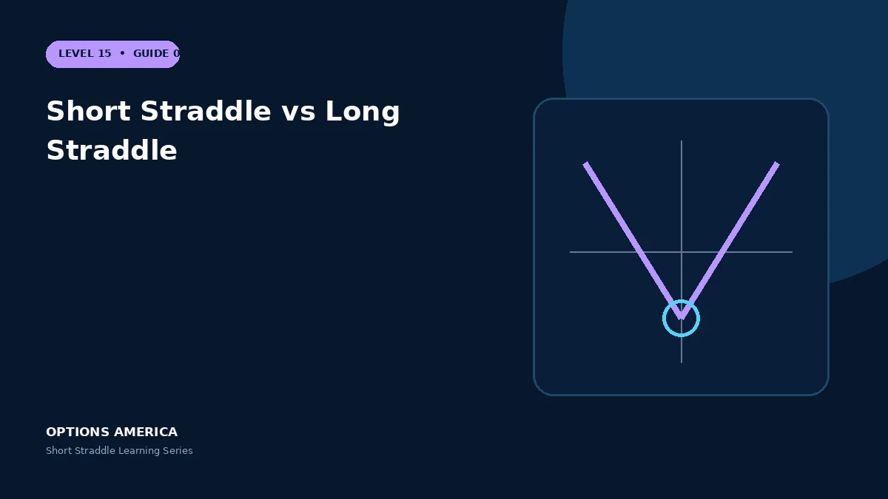

Compare short and long straddles across premium, volatility, theta, movement requirements and tail risk.
Cash flow
A short straddle receives a credit and has limited maximum profit. A long straddle pays a debit that defines its maximum loss.
Movement
The short position prefers price near the strike; the long position requires a move beyond either breakeven. One trader's expiration payoff is approximately the other trader's loss before costs.
Greeks
Short straddles are usually negative gamma, negative vega and positive theta. Long straddles reverse those signs and benefit from acceleration or volatility expansion.
Risk choice
Selling the straddle introduces substantial tail and margin risk. Buying it controls dollar loss but can lose steadily through decay when realized movement disappoints.
A practical example
A 100 straddle costs $8. The buyer risks $800 and needs expiration below $92 or above $108; the seller earns at most $800 and loses outside the same boundaries.
This simplified scenario focuses on expiration outcomes; live prices and risks will differ. Live option prices also reflect the underlying price, time decay, rates, dividends, liquidity and transaction costs. Greeks are theoretical estimates, not guarantees.
Build a risk-first trading plan
Before using short straddle vs long straddle, record the underlying price, strike, expiration, total credit and contract multiplier. Calculate both expiration breakevens, then model losses beyond them rather than stopping at the profitable range. The maximum credit is visible at entry, but the largest future loss is not.
Stress at least five underlying prices, a volatility increase and decrease, and several dates. Include a gap that cannot be adjusted intraday. Review delta, gamma, theta and vega at the position and portfolio level because several neutral premium trades can become directional together.
Define a profit target, maximum tolerated loss, margin reserve, event rule and latest exit date. Use a single multi-leg order where possible and verify both legs after every fill or adjustment. This process does not eliminate risk, but it makes the decision measurable and repeatable.
After the trade, record actual movement, volatility change, slippage and the largest directional exposure. Comparing those results with the original forecast helps separate sound execution from a lucky outcome and improves future duration, strike and position-size decisions.
Frequently asked questions
Which has defined loss?
The long straddle.
Which benefits from time decay?
Usually the short straddle.
Are they exact opposites?
Their legs are opposite, although execution costs differ.
Continue the Short Straddle cluster
Explore related guides: Short Straddle vs Short Strangle · Short Straddle Greeks: Delta, Gamma, Theta and Vega · When to Close or Roll a Short Straddle. For a structured sequence, use the free Level 15 – Short Straddle course.
Options involve risk and are not suitable for every investor. This material is educational and is not investment, tax or legal advice. Greeks are theoretical estimates, and contract terms and broker requirements can vary.